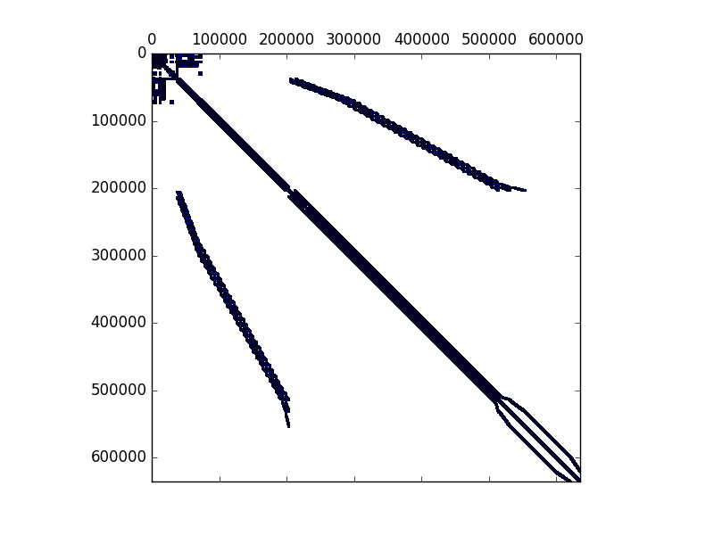

Background
Domain decomposition in Seismo-VLAB is employed to perform a parallel execution. Domain decomposition is carried out at the Pre-Analysis using METIS software. Here, the model domain (i.e., group of objects such as Node, Element, Material, Section, and Load) is divided so that the number of elements are almost uniform across processors.
REFERENCE:
- George Karypis and Vipin Kumar. "Multilevel k-way Partitioning Scheme for Irregular Graphs", J. Parallel Distrib. Comput. 48(1): 96-129, 1998.
Pre-Analysis
The DOMAIN DECOMPOSITION is performed at ./SVL/01-Pre_Process/Metis/Metis.py. In this file, there are two functions:
- SetMetisInputFile():
Creates the partition directory Partition and creates the input file for METIS - Serial Graph Partitioning by George Karypis.
- GetMetisOutputFile():
Runs the METIS - Serial Graph Partitioning by George Karypis and saves the element indices for each partition.
Once the information of the mesh has been partitioned using METIS, the Entities dictionary is divided using the ./SVL/01-Pre_Process/Core/SeismoVLAB.py file. In this python script two function are essential:
- createPartitions():
This function is employed to get all identifiers in Entities that belong to the partition
- Entities2Processor():
This function returns a new dictionary that will be written in json format with in this process.
- Attention
- Please refer to SVL/01-Pre_Process/Core/Partition.py for more details in declarations and implementation aspects
The NUMBERING SCHEME is employed to map the degree of freedom number to the linear system equation to be solved. The number scheme available are Plain and CutHill-McKee. This also computes the amount of memory that PETSc matrices need to be allocated. Some of the functions defined are:
- SetDegreeOfFreedom(plot):
This is the main function and assigns the degree of freedom numbering for each Node according to the User's numbering pattern. Currently, Plain and CutHillMcKee schemes are implemented. Also, if plot=True, then the sparsity pattern of the matrix will be display.
- FindDefectiveNodes():
This function loops over the Element and identify Node that does not belong to them. Then, it fix such Nodes that are defective. Constraints of type Diaphragm or General are not considered defective.
- CutHillMcKeeScheme():
This function performs the CutHill-McKee ordering scheme to the free degree of freedom. First compute the Sparse Matrix Pattern, and then computes the permutation vector. Such vector is finally employed to re-label the free-degree-of-freedom. The CutHill-McKee ordering Scheme for the model shown in the Background section is shown below:
- MinimumDegreeScheme():
This function is not implemented yet.
- PlainScheme():
This function assign a Plain Scheme to the degree of freedom of each Node, i.e., the node numbering is assigned consecutively from the lowest to the highest Node identifier. The Plain ordering scheme for the model shown in the Background section is shown below:

- FormSparseMatrix():
This function compute/emulates the Sparse Matrix Pattern to be employed in the user's defined ordering scheme.
- PetscAllocation():
This function This function computes (bruta fuerza) the number of non-zero for each diagonal and off-diagonal blocks required for allocation in PETSc.
- Attention
- Please refer to 01-Pre_Process/Core/Numberer.py for more details in declarations and implementation aspects
Run-Analysis
The File.$.json files located at the Partition folder are the result of the partitioned input files generated in Pre-Analysis. Note that the .$. represents the processor number and each one of these files contains a subdomain of the finite element model. Therefore, each .$. file is loaded depending on the processor number and no further care is taken in the Run-Analysis.


 1.8.13.
1.8.13.